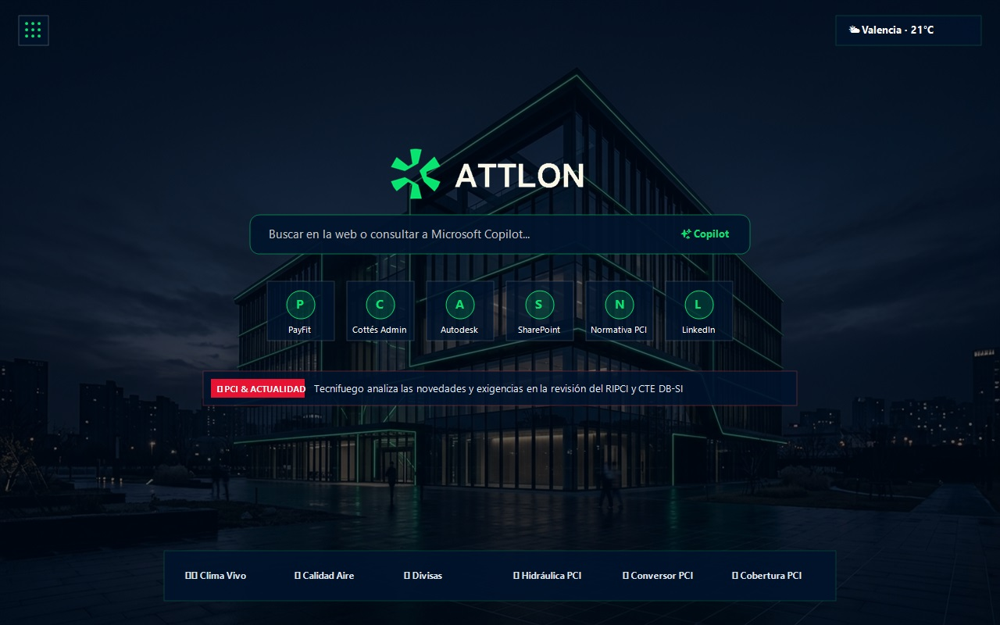

Diseñado para profesionales de la seguridad industrial y la ingeniería. Integra búsqueda rápida con Copilot, noticias de Protección Contra Incendios (PCI) en tiempo real, telemetría ambiental y accesos directos personalizables con privacidad total.

Todo lo que necesitas para tu jornada técnica organizado en un diseño moderno con la identidad visual corporativa de Attlon.
Alterna al instante entre el asistente de IA Microsoft Copilot, Google, Bing y DuckDuckGo con atajos rápidos de teclado para acelerar tus investigaciones técnicas.
Cintillo informativo en directo con feeds RSS auténticos y actualizados de Protección Contra Incendios, seguridad técnica, El País y 20 Minutos con enlaces directos a las fuentes originales.
Predicción meteorológica por horas y métricas de seguridad ambiental (calidad del aire, partículas PM2.5/PM10 e índice UV) mediante Open-Meteo sin rastreo GPS forzado.
Conversor de divisas en tiempo real con cotizaciones de mercado (EUR, USD, GBP, etc.), bloc de notas rápido persistente y calculadora para operaciones de ingeniería.
Acceso directo y organizado a tus marcadores favoritos y páginas corporativas directamente en el panel con búsqueda instantánea y procesamiento puramente en tu equipo.
Cumplimiento riguroso de las políticas de privacidad de Google Chrome y Microsoft Edge. Ni vendemos datos ni almacenamos perfiles de usuario.
Mueve, minimiza o despliega los módulos de trabajo con controles intuitivos de arrastrar y soltar (Drag & Drop).
Arrastra los iconos y módulos a la posición que prefieras. Si mueves el panel de noticias o los widgets, los marcadores y accesos se reajustan automáticamente sin solaparse.
Oculta los widgets secundarios con un solo clic para tener una vista minimalista centrada en el buscador y el fondo corporativo dinámico de Attlon.
Tus notas, atajos creados y ajustes de widgets se guardan de forma inmediata en el almacenamiento local de tu navegador para que estén siempre listos.
Compatible de forma nativa con Google Chrome, Microsoft Edge y navegadores basados en Chromium.
Instalable directamente desde Chrome Web Store o cargando el paquete empresarial empaquetado en tu navegador corporativo.
Disponible en Chrome Web Store
Optimizado para entornos Windows y Microsoft 365, con soporte completo para la tienda de complementos de Microsoft Edge.
Disponible en Microsoft Edge Add-ons
Para administradores de sistemas que distribuyen la extensión vía Directivas de Grupo (GPO / InTune) o en Modo Desarrollador.
Instalador silencioso y políticas ADMX disponibles